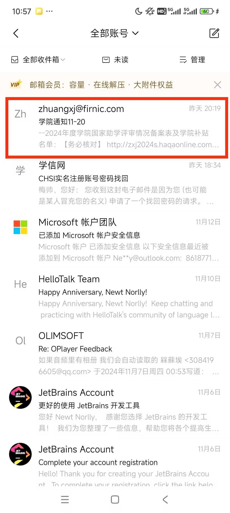
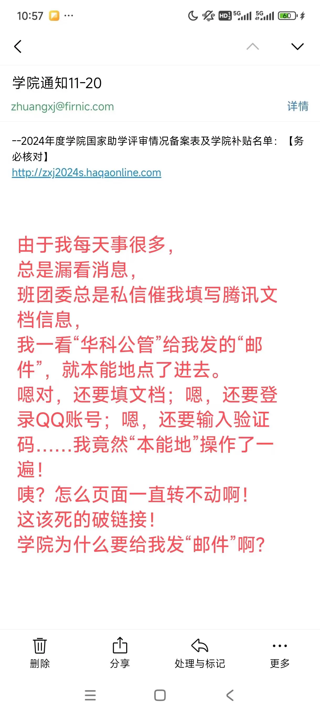
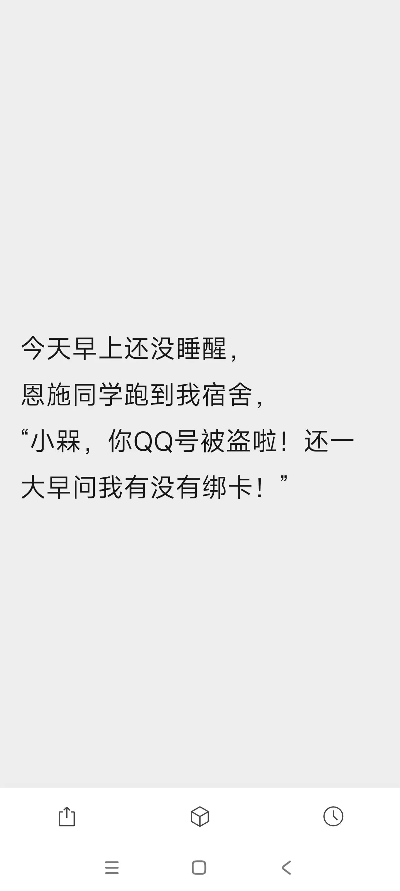
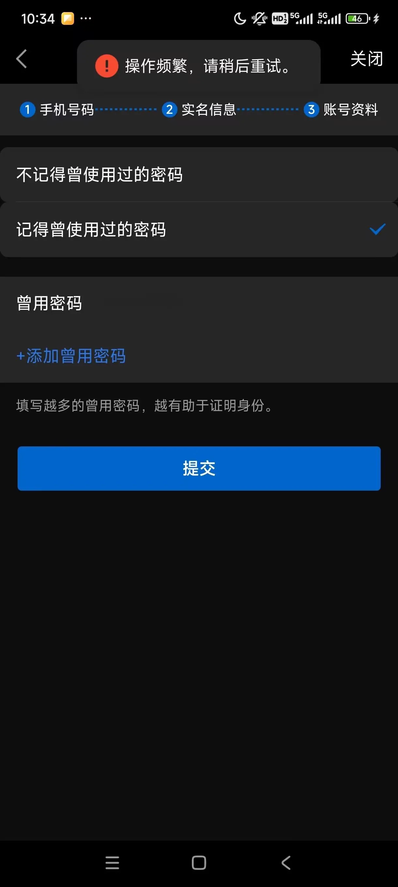
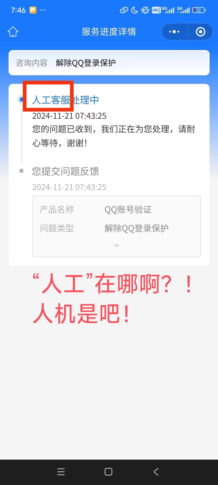
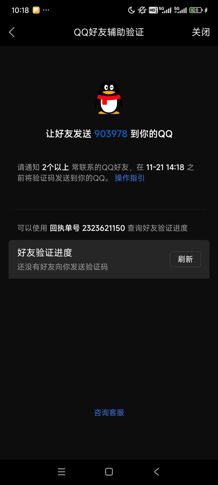
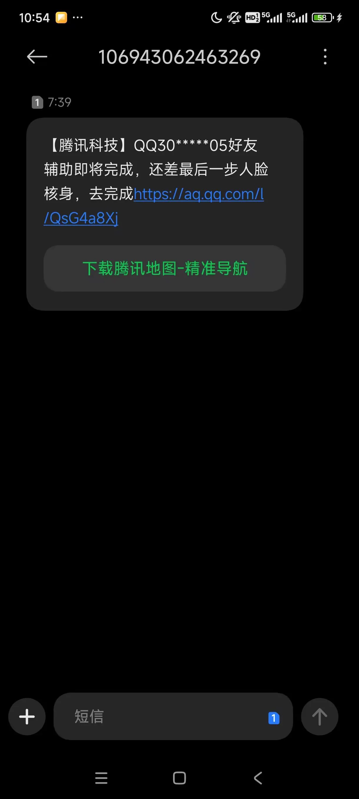
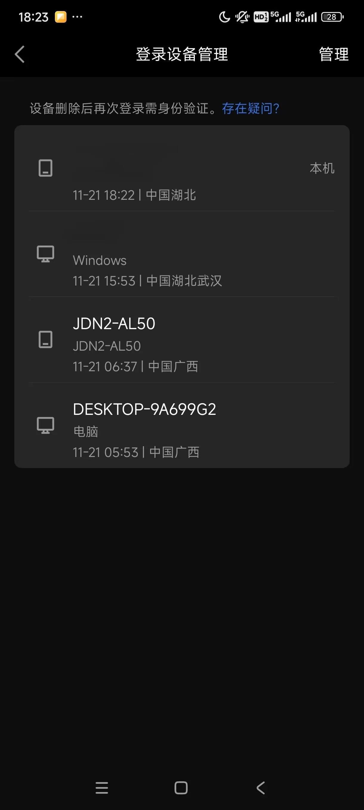

Journal · 2024-11-21
湖北省武汉市
2024年11月21日 11:45
小伙伴们，快来快来！我要曝光这个骗子！
这是骗子的邮箱zhuangxj@firnic.com，
我要把骗子们丢到浔阳江里！
如果我的QQ账号找你要钱，
尽管在聊天页面骂我吧，
骂得越恶心越好！
该死的骗子！
柴江赣北 : 该死的骗子！连我的师友都骗！连我的领导都骗！连我不熟的人，都要骗！
2024年11月21日 12:03
柯丽涵 : 乐，只要我坚持早睡晚起就碰不到骗子
2024年11月21日 12:06
柴江赣北 : 该死的骗子！你骗得了我的QQ号，骗不了我们的毛爷爷！
2024年11月21日 12:11
编辑于2024年11月21日 22:59
中国广西的骗子，是吧？大早上骗我的师友和领导，也不考虑大学生的作息！连我的话语体系都没怎么学，还想以我的名义骗软妹币！昨天盗我的密码和验证码，今早才悄悄地盗我的号！你发那么多“在吗”，有什么用呢？
有哪一个小小本科生，敢直接跟领导发“在吗”！连基本的礼仪称呼都不带！骗人都不会。。
这是骗子的设备序列号：
电脑：DESKTOP-9A699G2
就交给互联网和中国网警吧。。
设备名都不知道提前更改，还敢搞网络诈骗？！








Nov 21, 2024 11:45
Hey everyone, come quick! I'm going to expose this scammer!
This is the scammer's email: zhuangxj@firnic.com,
I'll toss these scammers into the Xunyang River!
If my QQ account asks you for money,
go ahead and curse me out in the chat,
the nastier the better!
Damn scammer!
柴江赣北 : Damn scammer! You scammed my teachers and friends! You scammed my boss! Even people I barely know — you'd scam them all!
Nov 21, 2024 12:03
柯丽涵 : lol, as long as I stick to sleeping early and waking up late, I'll never run into a scammer
Nov 21, 2024 12:06
柴江赣北 : Damn scammer! You can steal my QQ account, but you can't steal our Grandpa Mao (our money)!
Nov 21, 2024 12:11
Edited on Nov 21, 2024 22:59
A scammer from Guangxi, China, huh? Scamming my teachers and my boss first thing in the morning, not even considering a college student's sleep schedule! You haven't even learned how I talk, and you still want to scam people for money in my name! You stole my password and verification code yesterday, and only quietly stole my account this morning! You sent all those "Are you there?" messages — what good did any of that do?
What little undergrad would dare send a straight "Are you there?" to their boss! Not even a basic polite form of address! You don't even know how to scam people..
Here is the scammer's device serial number:
Computer: DESKTOP-9A699G2
Just leave it to the internet and China's cyber police..
You don't even know to change the device name in advance, and you still dare run an online scam?!
21 nov. 2024 11:45
Les amis, venez vite, venez vite ! Je vais dénoncer cet escroc !
Voici l'adresse e-mail de l'escroc : zhuangxj@firnic.com,
Je vais jeter ces escrocs dans le fleuve Xunyang !
Si mon compte QQ vous demande de l'argent,
n'hésitez pas à m'insulter dans la discussion,
plus c'est dégoûtant, mieux c'est !
Fichu escroc !
柴江赣北 : Fichu escroc ! Il escroque même mes professeurs et mes amis ! Même mon supérieur ! Même des gens que je connais à peine, il veut tous les escroquer !
21 nov. 2024 12:03
柯丽涵 : Mdr, tant que je continue à me coucher tôt et à me lever tard, je ne croiserai pas d'escroc
21 nov. 2024 12:06
柴江赣北 : Fichu escroc ! Tu peux voler mon compte QQ, mais tu ne peux pas voler notre Grand-père Mao (notre argent) !
21 nov. 2024 12:11
Modifié le 21 nov. 2024 à 22:59
Un escroc du Guangxi, en Chine, hein ? Il escroque mes professeurs et mon supérieur de bon matin, sans même tenir compte du rythme de sommeil d'un étudiant ! Il n'a même pas appris ma façon de parler, et il veut quand même escroquer de l'argent en mon nom ! Il a volé mon mot de passe et mon code de vérification hier, et ce n'est que ce matin qu'il a discrètement volé mon compte ! Tu as envoyé tous ces « Tu es là ? » — à quoi bon ?
Quel petit étudiant de licence oserait envoyer directement « Tu es là ? » à son supérieur ! Sans même la moindre formule de politesse ! Tu ne sais même pas escroquer les gens..
Voici le numéro de série de l'appareil de l'escroc :
Ordinateur : DESKTOP-9A699G2
Je le confie à Internet et à la police du net chinoise..
Tu ne sais même pas changer le nom de l'appareil à l'avance, et tu oses encore faire de la fraude en ligne ?!
21.11.2024 11:45
Leute, kommt schnell her! Ich werde diesen Betrüger entlarven!
Das ist die E-Mail des Betrügers: zhuangxj@firnic.com,
Ich werde diese Betrüger in den Xunyang-Fluss werfen!
Falls mein QQ-Konto euch um Geld bittet,
dann beschimpft mich ruhig im Chat,
je ekliger, desto besser!
Verdammter Betrüger!
柴江赣北 : Verdammter Betrüger! Er betrügt sogar meine Lehrer und Freunde! Sogar meinen Vorgesetzten! Selbst Leute, die ich kaum kenne, will er alle betrügen!
21.11.2024 12:03
柯丽涵 : Lol, solange ich früh schlafe und spät aufstehe, begegne ich keinem Betrüger
21.11.2024 12:06
柴江赣北 : Verdammter Betrüger! Du kannst mein QQ-Konto stehlen, aber nicht unseren Opa Mao (unser Geld)!
21.11.2024 12:11
Bearbeitet am 21.11.2024 um 22:59
Ein Betrüger aus Guangxi, China, richtig? Er betrügt meine Lehrer und meinen Vorgesetzten am frühen Morgen, ohne auch nur an den Schlafrhythmus eines Studenten zu denken! Er hat nicht einmal meine Art zu reden gelernt und will trotzdem in meinem Namen Geld erschwindeln! Gestern hat er mein Passwort und meinen Bestätigungscode gestohlen, und erst heute Morgen hat er leise mein Konto gekapert! Du hast so viele „Bist du da?“-Nachrichten geschickt — was hat das gebracht?
Welcher kleine Bachelor-Student würde es wagen, seinem Vorgesetzten einfach „Bist du da?“ zu schicken! Ohne auch nur eine grundlegende höfliche Anrede! Du kannst nicht einmal richtig betrügen..
Hier ist die Seriennummer des Geräts des Betrügers:
Computer: DESKTOP-9A699G2
Überlass es einfach dem Internet und der chinesischen Cyberpolizei..
Du weißt nicht einmal, den Gerätenamen vorher zu ändern, und wagst dich trotzdem an Online-Betrug?!